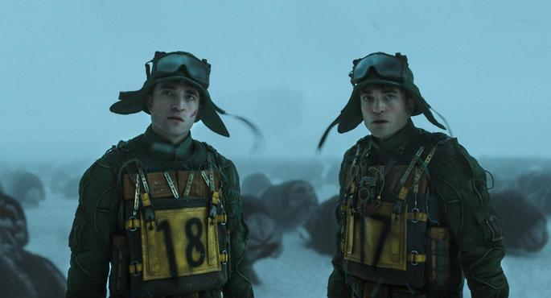
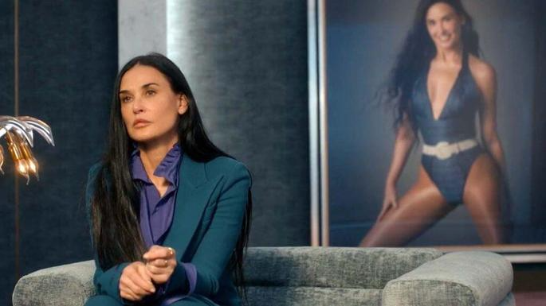
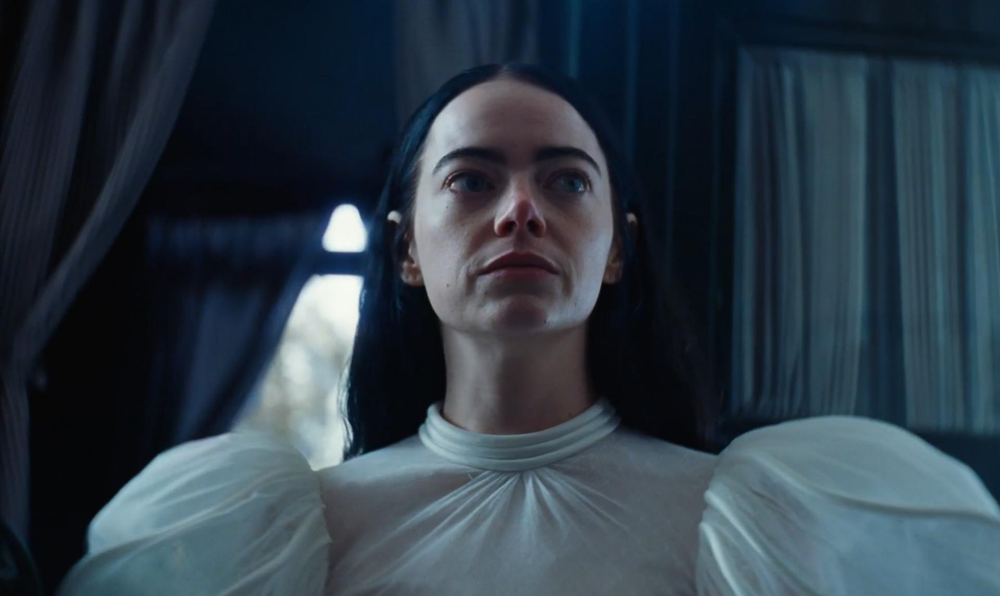
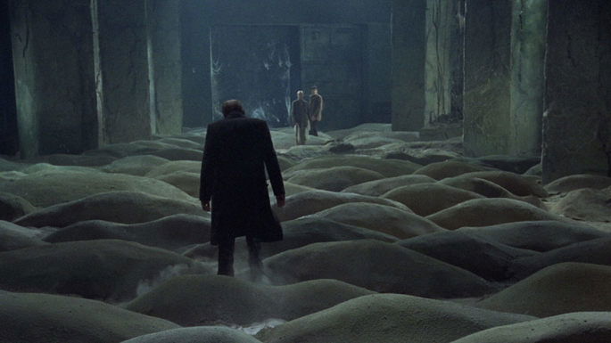

Peliculas

Mickey 17
Dirección: Bong Joon-ho
La película de ciencia ficción de Bong Joon-ho, basada en la novela
"Mickey 7" de Edward Ashton, es una adaptación que combina
elementos de humor y acción. La historia sigue a Mickey, un clon
desechable que es enviado a colonizar un planeta inhóspito.
Cuando su cuerpo es destruido, su conciencia se transfiere a un nuevo
clon, lo que le permite continuar su misión. La película explora temas
de identidad y sacrificio en un entorno futurista.

La Sustancia
Dirección: Coralie Fargeat
En esta novela, Goodman narra la historia de una mujer que,
tras la muerte de su madre, se embarca en un viaje para descubrir
el pasado de su familia. A medida que investiga, se enfrenta a secretos
familiares y a la complejidad de las relaciones humanas. La prosa de
Goodman es rica y evocadora, creando un retrato conmovedor de la vida
y la memoria.

Pobres Criaturas
Dirección: Yorgos Lanthimos
"Pobres Criaturas" es una película de ciencia ficción dirigida por
Yorgos Lanthimos, basada en la novela homónima de Alasdair Gray.
La historia sigue a Bella Baxter, una mujer traída de vuelta a la vida
por un científico loco. A medida que Bella explora el mundo, se enfrenta
a cuestiones de identidad y libertad. La película combina elementos de
fantasía y surrealismo, creando una experiencia visual única.

Stalker (1979)
Dirección: Andréi Tarkovski
"Stalker" es una película de ciencia ficción dirigida por Andréi Tarkovski,
basada en la novela "Roadside Picnic" de Arkadi y Boris Strugatski. La historia
sigue a un guía conocido como "Stalker" que lleva a dos hombres a una zona
prohibida llamada "La Zona", donde se dice que se encuentra una habitación
que puede conceder deseos. La película explora temas filosóficos y existenciales,
utilizando una narrativa poética y visualmente impactante.